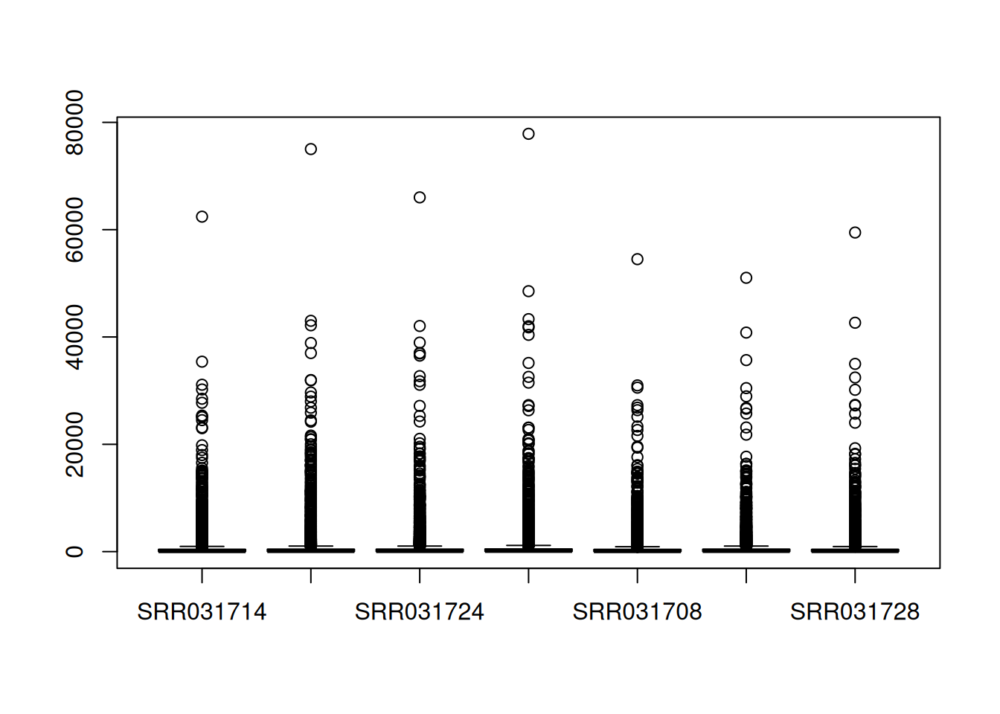
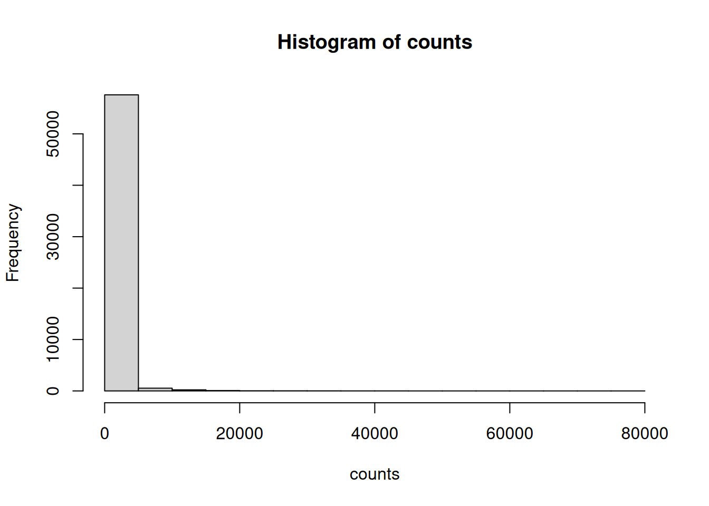
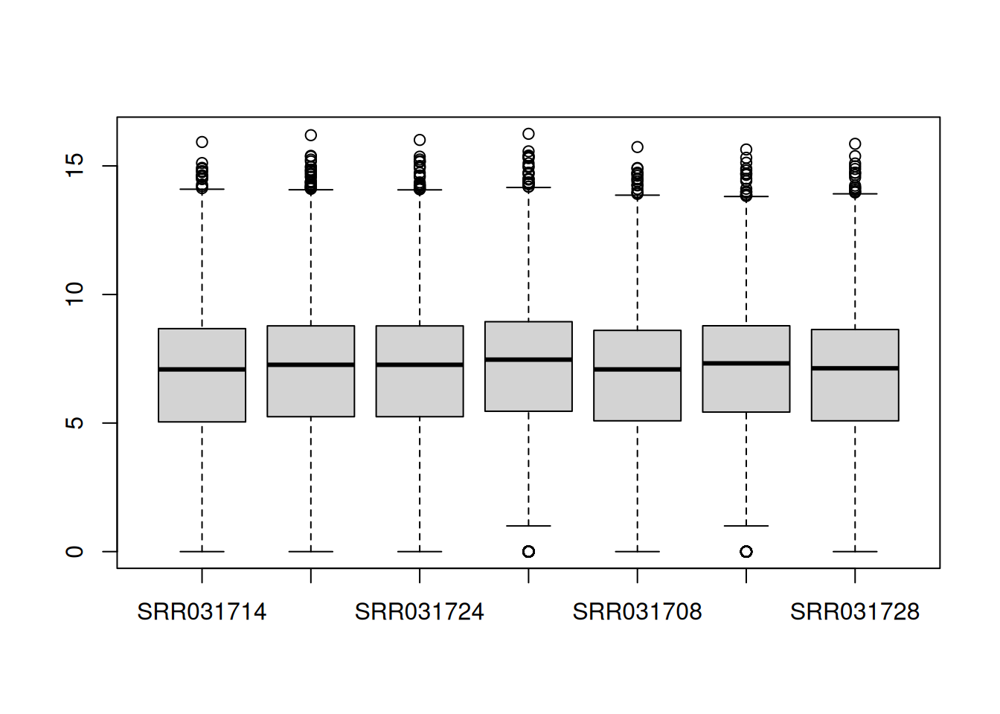
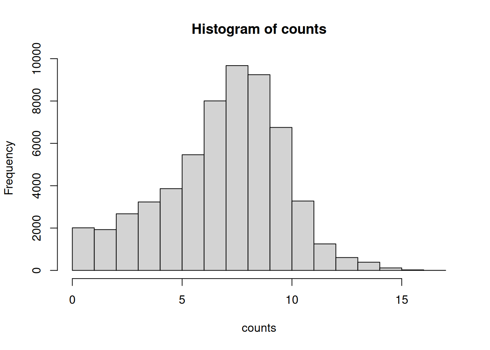
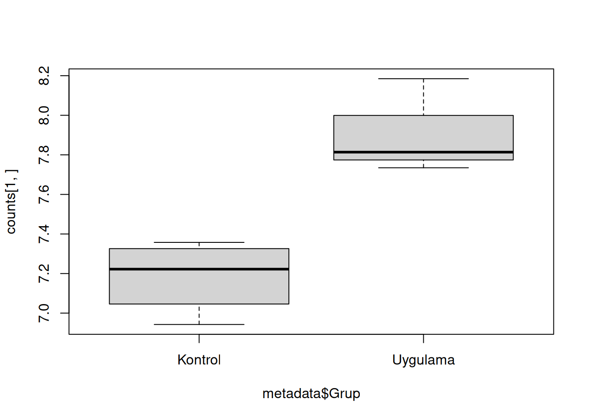
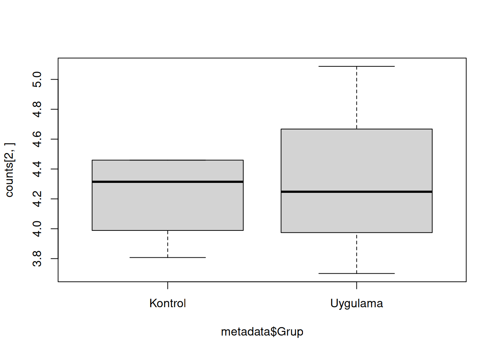

counts <- read.table(file = "https://raw.githubusercontent.com/emrahkirdok/ybva/main/data/counts_drosophila.txt", header = T, sep = " ")
counts <- as.matrix(counts)27 RNA Dizileme Veri analizi
## Veri yükleme
Öncelikle verileri yükleyelim. İlk olarak Drosophila canlısından elde edilen RNA sayı matrisini yükleyelim:
Şimdi de örneklerin sahip oldukları metadata bilgilerini yükleyelim:
metadata <- read.table(file = "https://raw.githubusercontent.com/emrahkirdok/ybva/main/data/sample_info_drosophila.txt", header = T)RNASeq matrisi boyutuna bakalım:
dim(counts)[1] 8359 7Burada Sütun isimlerinin sırasına dikkat edelim:
colnames(counts)[1] "SRR031714" "SRR031716" "SRR031724" "SRR031726" "SRR031708" "SRR031718"
[7] "SRR031728"Örnek metaverisine baktığımızda, örneklerin sahip olukları metaveri bilgilerini görebilirz. Burada iki tane koşul bulunmakta: kontrol ve uygulama
Ayrıca, RNA sayı matrisindeki örnek sırası ile, bu veri çerçevesinde bulunan örneklerin sıralarının aynı olduğuna dikkat edelim:
metadata Ornek Grup Kutuphane
1 SRR031714 Kontrol PE
2 SRR031716 Kontrol PE
3 SRR031724 Uygulama PE
4 SRR031726 Uygulama PE
5 SRR031708 Kontrol SE
6 SRR031718 Uygulama SE
7 SRR031728 Kontrol SE27.1 Veri normalizasyonu
Kutu grafiği ile elimizdeki veriye bakalım:
boxplot(counts)
Şimdi de verinin histogramını oluşturalım:
hist(counts)
Dikkat edersek veri karşılaştırılabilir değil. Öncelikle normalizasyon ile veriyi karşılaştırılabilir hale getirelim. Bunun için kullanılacak tekniklerden bir tanesi log2 normalizasyonu:
counts <- log2(counts)Kutu grafiği ile veriyi inceleyelim:
boxplot(counts)
Şimdi de histogram ile:
hist(counts)
Dikkat ederseniz, artık veri normalize edildi.
Son olarak dendrogram oluşturup, elimizdeki koşulların birlikte gruplanıp gruplanmadıklarına bakalım:
27.2 Gen anlatım analizi
İlk olarak birinci geni inceleyelim. Acana bu gen anlatımında anlamlı bir farklılık var mı?
kontrol <- counts[1,metadata$Grup=="Kontrol"]
uygulama <- counts[1,metadata$Grup=="Uygulama"]
test <- t.test(x = kontrol, y = uygulama)Peki bu genin anlatımında görülen değişim anlamlı mı? Bunu 0.05 anlamlılık seviyesine göre inceleyelim:
test$p.value < 0.05[1] TRUEEvet, bu gen anlamı bir şekilde değişmiş. Şimdi de bu genin grafiğine bakalım:
boxplot(counts[1,]~metadata$Grup)
Peki ikinci gende durum nedir?
kontrol <- counts[2, metadata$Grup=="Kontrol"]
uygulama <- counts[2, metadata$Grup=="Uygulama"]
test <- t.test(x = kontrol, y = uygulama)Peki bu genin anlatımında görülen değişim anlamlı mı? Bunu 0.05 anlamlılık seviyesine göre inceleyelim:
test$p.value < 0.05[1] FALSEBu genin anlatımı anlamlı bir şekilde değişmemiş. Şimdi de bu genin grafiğine bakalım:
boxplot(counts[2,]~metadata$Grup)
Şimdi bütün genler için inceleme yapalım:
Kaç tane gen anlamlı değişmiş? (0.05’e göre):
sum(p.value < 0.05, na.rm = TRUE)[1] 1641